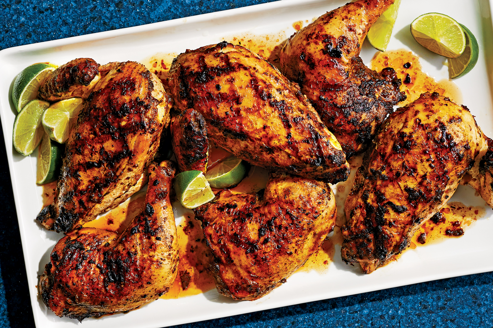

HOW TO MAKE JERK CHICKEN

This is Jerk Chicken, the taste of Jamaica
This food was invented to help you speak patois
Ingredients
- 2 Teaspoons allpsice
- 2 Teaspoons brown sugar
- 1/2 teaspoons cumin
- 1/4 teaspoon cloves
- 1/4 teaspoon cinnamon
- 1 teaspoon salt
- 1/2 teaspoon freshly ground black pepper
- 1/8 teaspoon cayenne pepper
- 1 tablespoon canola oil
- 11/2lbs. boneless skinless chicken breasts
How to jerk it up
- Combine all the spices, brown sugar and oil in small bowl and preheat
a skillet or grill to high heat
- Rub the spice mixture over the chicken breats and later the spice mixture
on the chicken. Place the chicken on skillet and cook for 4 mins each side with chicken no longer pink
- Remove from heat and let rest for 5/10 mins to let juices soak in before cuttting.
Return to homepage